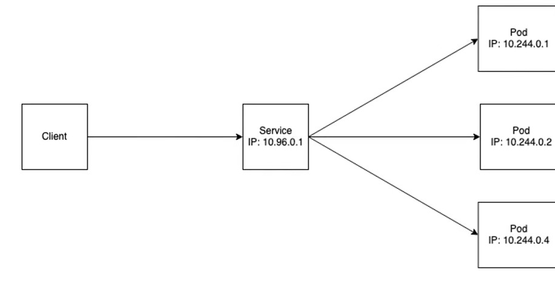

Worker Node
Worker node é o nome dado uma máquina de trabalho (working machine) integrante de um cluster Kubernetes. Essas máquinas Podem ser físicas, virtuais (virtual machine - VM) ou uma aplicação em nuvem. A principal responsabilidade de um worker node (frequentemente referido apenas como node) é o armazenamento de múltiplos Pods. Ou seja, esses componentes são os responsáveis diretos pelo funcionamento da aplicação pela qual o cluster é responsável. Para entender melhor seu funcionamento, detalharemos a seguir os principais processos que compõem um worker node.
Containers Runtime
Todo worker node deve possuir um container runtime, como Docker, por exemplo. Isto é esperado já que, como citado, o objetivo de um node é cuidar dos Pods, que por sua vez possuem os containers.
Kubelet
Kubelet é outro processo de suma importância, presente em todo node. O objetivo desse agente é garantir que os containers de cada Pod estão rodando como esperado. Para isso, o Kubelet toma como base PodSpecs (objetos YAML ou JSON que descrevem um Pod) e garante que os containers descritos neles estão rodando como esperado. Cabe também ao Kubelet a tarefa de inicializar um Pod, definindo a quantidade de recursos da máquina que deve ser reservada a ele, como memória e CPU.
Kube-Proxy
Um cluster geralmente possui vários worker nodes, cada um contendo diferentes Pods (ou réplicas de mesmos Pods), e que precisam se comunicar entre si. Essa comunicação se dá através de um proxy, chamado de Kube-Proxy. Antes de explicá-lo, vejamos como seria a comunicação entre Pods caso ele não existisse:
Sem Kube-Proxy, um Pod cliente (que faz uma requisição) precisaria conhecer o endereço de IP do Pod servidor (que recebe uma requisição) que desejasse se conectar. Ou seja, cada Pod precisaria formar e manter uma lista de endereços de todos os outros Pods. Isso por si só já é uma carga de trabalho desnecessária para um Pod, mas tudo fica ainda mais complicado quando lembramos de seu tempo de vida. Como descrito na seção Componentes, os Pods são efêmeros. Portanto, espera-se eles sejam criados e destruídos constantemente - frequentemente devido à atualizações na escalabilidade, falhas em hardware e software. Seguindo esse modelo, toda vez que um Pod fosse substituído deveria haver um procedimento de informar a todos os outros Pods o novo endereço de IP. Evidentemente, isso seria computacionalmente custoso.
Mas esse não é o cenário real em um cluster Kubernetes. O Kube-Proxy implementa um serviço que provê comunicação estável: Um controlador observa os Pods que estão associados com determinado serviço para adicioná-los e removê-los do seu banco de dados quando necessário. Agora, o cliente só precisa do endereço do serviço, e o resto não é sua responsabilidade.
Em suma, o Kube-proxy é um proxy de rede que é executado em cada nó de seu cluster, implementando parte do conceito de serviço do Kubernetes. O Kube-proxy mantém regras de rede nos nós, que permitem a comunicação de rede com seus Pods a partir de sessões de rede dentro ou fora do cluster.